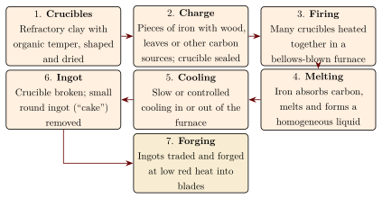

Chapter 6: Ukku: Crucible Steel and the “Wootz” Tradition¶
6.1 Crucible Steel¶
Crucible steel is steel made by melting iron together with carbon-bearing material in a closed clay crucible, so that the iron absorbs carbon and becomes a homogeneous liquid alloy, which solidifies on cooling as a small ingot. The result is a high-carbon steel (typically 1–2 per cent carbon), much richer in carbon than ordinary bloomery iron and free of the slag that bloomery iron contains. In south India crucible steel was made from at least the last centuries BCE, and in Sri Lanka from the first millennium CE, until the 19th century (Srinivasan and Ranganathan 2004; Juleff 1998).
The English name “wootz” first appears in the 1790s, when the physician Helenus Scott sent samples of Indian steel from Bombay to the Royal Society in London. It is usually explained as a misreading or mishearing of ukku, the word for steel in Kannada and Telugu (Tamil urukku, “melted”). In Persian and Arabic sources Indian steel is called hindī or hinduwānī, and steel in general fūlād (Srinivasan and Ranganathan 2004; Bronson 1986).
Crucible steel was not made only in South Asia. Archaeological work in Central Asia—at Merv in Turkmenistan and Akhsiket in Uzbekistan—has revealed large-scale crucible steel production in the early Islamic centuries, using rather different crucibles and charges, and Iranian sources describe further variants (Rehren and Papachristou 2003). South Asia was one of several centres of the technology. The crucible finds from Kodumanal, in contexts of the late centuries BCE and early centuries CE, are older than the Central Asian evidence, which dates from about the 9th century CE; but the South Asian contexts are not closely dated, the earliest stages of the technology are poorly known everywhere, and the question of where it began remains open.
6.2 Historical Evidence¶
The early written evidence for Indian steel is suggestive rather than precise:
-
Quintus Curtius Rufus (1st century CE), describing Alexander’s campaign in the Punjab, lists “white iron” (ferrum candidum) among the gifts presented by Indian peoples. Whether this was steel, polished iron or something else is uncertain.
-
The Periplus of the Erythraean Sea (1st century CE) lists “Indian iron and steel” among the goods shipped from Ariakē in western India to Adulis on the Red Sea coast (Casson 1989).
-
Arabic authors of the 9th–11th centuries, among them the philosopher al-Kindī in his treatise on swords and al-Bīrūnī, discuss Indian steel and Indian swords and rank them highly (Bronson 1986).
Al-Kindī’s 9th-century treatise on swords is particularly informative. It classifies swords by the kind of iron or steel from which they were made and by their place of manufacture, distinguishing swords made in India from those made elsewhere of imported steel, and it describes how the qualities of blades were judged from their patterns, their ring and their behaviour in use. Later Persian and Arabic writers on swords and on steel continued to treat Indian steel as a standard of quality (Bronson 1986).
Archaeological evidence is more secure. Crucible fragments with steel residues have been identified at Kodumanal in Tamil Nadu in contexts of the late centuries BCE and early centuries CE, and at a number of later sites in Tamil Nadu, Karnataka, Andhra Pradesh and Telangana. In Sri Lanka crucible steel was made in the Samanalawewa area in the first millennium CE (Srinivasan 1994; Srinivasan and Ranganathan 2004; Juleff 1998). Table 6.1 summarises the evidence for the trade in Indian steel.
| Destination | Period | Evidence |
|---|---|---|
| Red Sea, East Africa | 1st c. CE onwards | Periplus: Indian iron and steel |
| Iran and the Arab world | late 1st mill. CE onwards | Arabic and Persian writings on Indian steel and swords |
| Europe | 17th–19th c. | Samples and travellers’ reports; scientific study |
6.3 The Process¶
Our knowledge of how crucible steel was made in India comes from the accounts of European observers in the late 18th and early 19th centuries—Francis Buchanan in Mysore (observed 1800–1801, published 1807), H. W. Voysey at Konasamudram in the Deccan (1832), J. M. Heath and others—and from archaeological study of crucibles and debris (Srinivasan and Ranganathan 2004; Bronson 1986). The accounts describe several regional variants, but the main steps were similar (Figure 6.1).

6.3.1 The Crucible¶
The crucibles were made of refractory clay mixed with organic temper such as rice husk, which burned out in firing and left the walls porous and resistant to thermal shock, while the silica of the husk raised the clay’s refractoriness. They were small, typically a few centimetres across and somewhat taller, and produced ingots weighing a few hundred grams. The crucible was sealed with a clay lid before firing.
6.3.2 The Charge¶
In the Deccani process described by Voysey, pieces of wrought iron were packed into the crucible with wood chips and green leaves, which supplied the carbon. Other variants appear to have used other carbon sources, and in some cases a mixture of high- and low-carbon irons. Archaeological study of the crucibles has helped to distinguish these traditions (Srinivasan and Ranganathan 2004).
6.3.3 Firing and Cooling¶
Dozens of crucibles were stacked in a furnace and fired for several hours with bellows. As the iron absorbed carbon its melting point fell, so that the charge could become fully liquid at temperatures attainable in a charcoal furnace. The way the ingots were cooled affected their structure: slow cooling encouraged the growth of coarse structures of iron carbide (cementite) that, after forging, produced the visible surface pattern.
6.4 The Metallurgy of the Watered Pattern¶
Blades forged from crucible steel ingots in Iran, Syria, India and elsewhere could show a “watered” pattern of light and dark wavy bands when etched—the “Damascus” pattern that made them famous in Europe. The pattern is quite different from the “pattern-welded” or “Damascus” steel made by forge-welding layers of different irons together.
Modern research has explained the watered pattern (Verhoeven et al. 1998; Wadsworth and Sherby 1980; Smith 1960):
-
The steel contains about 1–2 per cent carbon, so that in the solid it consists of a matrix (pearlite, or martensite if quenched) with many particles of iron carbide (cementite).
-
During solidification, small amounts of carbide-forming impurities such as vanadium and molybdenum segregate between the growing dendrites. When the ingot is repeatedly heated and forged at relatively low temperatures, cementite particles cluster in these impurity-rich regions, forming bands.
-
Forging at too high a temperature dissolves the cementite and destroys the pattern; forging at too low a temperature cracks the steel. Successful smiths worked within a narrow temperature range, judged by colour.
-
Etching attacks the matrix and the carbide differently, revealing the bands as the watered pattern. Persian and Indian smiths named different patterns; one, with ladder-like cross-bars, was called kirk narduban (“forty steps”) or “Muhammad’s ladder”.
J. D. Verhoeven and the bladesmith A. H. Pendray showed in the 1990s that the pattern could be reproduced only when suitable impurity levels were present, which explains why many 19th-century European attempts failed and why the quality of Indian steel depended on the ores from which the iron was made (Verhoeven et al. 1998).
Scholarly Note: Nanotubes in a Damascus Sabre
In 2006 Reibold and colleagues reported carbon nanotubes and cementite nanowires in a sample from a 17th-century Damascus sabre examined by high-resolution electron microscopy (Reibold et al. 2006). The finding is interesting for materials science, but it concerns one blade, the mechanism of formation is uncertain, and there is no evidence that these nanostructures were responsible for the qualities of Damascus blades. Popular claims that Indian smiths “practised nanotechnology” misrepresent the study.
6.5 Damascus Blades¶
Indian crucible steel ingots were traded to Iran and the Arab world, where smiths forged them into blades; Iran and Central Asia also produced their own crucible steel. The name “Damascus” probably reflects the city’s role as a market and production centre for fine blades, or the “watered” appearance of the steel, rather than the origin of the metal. The best Damascus blades combined a hard, sharp edge with toughness; stories of blades that cut floating silk scarves or sliced through rifle barrels belong to legend. Crusaders may well have encountered such blades, but the European fascination with “Damascus steel” belongs mainly to the 18th and 19th centuries (Smith 1960).
6.6 Swords, Armour and Tools in India¶
Crucible steel was used in India itself as well as exported. Surviving Indian arms of the 16th–19th centuries include many blades of watered crucible steel: the curved talwār, the straight, broad khaṇḍā of the Rajputs and Marathas, daggers such as the kaṭār and khanjar, and armour, arrowheads and spear points. Mughal and Deccani armouries prized such steel, and blades were frequently inscribed, inlaid with gold (koftgari) or fitted with hilts of jade and precious stones. Many of the finest surviving pieces are in the collections of former princely states and in museums in India and abroad. Not all Indian blades were crucible steel, however; many were made of ordinary bloomery iron and steel, sometimes pattern-welded. The arms themselves are treated in Volume 20, Yuddha and Dhanurveda, and the trade in steel in Volume 19, Vāṇijya and Samudra.
Crucible steel was also used for tools that needed a hard edge, such as chisels, files and the dies used to strike coins. The early European interest in wootz was in part an interest in its use for surgical instruments and fine cutlery.
6.7 Two Eyewitness Accounts¶
The accounts of European observers are our most detailed sources for how crucible steel was made in practice (Srinivasan and Ranganathan 2004; Bronson 1986).
Francis Buchanan, travelling through Mysore and the neighbouring regions in 1800–1801 on behalf of the East India Company, described the making of steel in small village workshops. He recorded the preparation of crucibles from local clay and husk, the packing of each with pieces of iron and wood, the sealing of the crucibles, their firing in numbers in a furnace blown by bellows, and the extraction of the small cakes of steel, which were sold to merchants. He also recorded the prices and the organisation of the trade, with the eye of an official surveying the resources of newly conquered territory.
H. W. Voysey, a geologist, described production at Konasamudram in the Deccan in an account published in 1832. He emphasised the use of green leaves in the charge, the careful sealing of the crucibles, and the furnace arrangements. Voysey’s and Buchanan’s descriptions differ in detail, a reminder that crucible steel was made in several local variants rather than by a single standard method.
Both accounts were written when the industry was already under pressure, and both were written by men who regarded the processes as interesting curiosities of a subject people. They are nonetheless invaluable, and archaeological work has confirmed many of their details.
6.8 Crucible Steel in Sri Lanka and Central Asia¶
Gill Juleff’s survey of the Samanalawewa area in Sri Lanka located not only wind-powered iron smelting furnaces but also evidence for crucible steel production in the first millennium CE, using crucibles different in form and composition from those of south India (Juleff 1998). Sri Lanka thus appears as a centre of crucible steel making in its own right, not merely as an outlier of the south Indian industry.
In Central Asia, excavations at Merv (Turkmenistan) and Akhsiket (Uzbekistan) have revealed large-scale crucible steel production between about the 9th and 12th centuries CE. Rehren and Papachristou’s comparison of these crucibles with South Asian ones shows that the two regions used different clays, shapes and charges, and probably different chemical routes—in Central Asia, at least in part, by melting cast iron with wrought iron—while arriving at similar products (Rehren and Papachristou 2003). Whether the Central Asian industry derived from South Asian knowledge, or developed independently, is not yet known.
6.9 Production Centres¶
Historical and archaeological sources point to several regions of production (Srinivasan and Ranganathan 2004; Srinivasan 1994):
- Telangana and the Deccan
- Konasamudram near Nizamabad, described by Voysey (1832), where a hoard of crucible-steel ingots has recently been studied (Jaikishan et al. 2021), and other Deccani sites associated with the Golconda and Hyderabad markets.
- Karnataka
- The Mysore region, where Buchanan observed production in 1800–1801; archaeological sites with crucible debris such as Gatihosahalli.
- Tamil Nadu
- Kodumanal (early); Mel-siruvalur and other sites in the Salem and Tiruvannamalai regions.
- Sri Lanka
- Crucible steel making in the Samanalawewa area and elsewhere (Juleff 1998).
6.10 European Study and Attempts at Replication¶
Indian steel attracted intense interest in Europe once samples became available in the 1790s (Smith 1960; Srinivasan and Ranganathan 2004):
-
Michael Faraday and the cutler James Stodart (1819–1822) analysed wootz and experimented with alloys of steel with various metals, believing wrongly that aluminium was the key.
-
Jean-Robert Bréant in Paris (early 1820s) recognised that high carbon content and slow cooling were essential.
-
Pavel Anosov, at the Zlatoust works in the Urals, produced patterned crucible steel (Russian bulat) in the 1830s and published his results in 1841.
-
Robert Hadfield (1912) analysed ancient Sinhalese iron and steel and the Delhi pillar (Hadfield 1912).
-
Jeffrey Wadsworth and Oleg Sherby, American materials scientists, related Damascus steel to modern ultra-high-carbon superplastic steels (Wadsworth and Sherby 1980).
-
J. D. Verhoeven and A. H. Pendray identified the role of trace impurities and reproduced the pattern (Verhoeven et al. 1998).
European steel-makers also learned from crucible steel more generally: Benjamin Huntsman’s crucible process at Sheffield (1740s) was developed independently, but the analyses of wootz contributed to the 19th-century understanding of the role of carbon in steel.
6.11 The Crucible as a Ceramic Achievement¶
The crucible had to withstand temperatures well above those of ordinary pottery firing for hours, resist the corrosive slags formed inside it, survive thermal shock, and hold its seal while allowing gases to escape. South Indian and Sri Lankan potters met these requirements with local clays, organic temper and, in some traditions, other additives. Comparative study of crucibles from South Asia and Central Asia shows that different regions arrived at different but equally effective ceramic recipes (Rehren and Papachristou 2003; Srinivasan and Ranganathan 2004). Crucibles are discussed further in Chapter 12.
6.12 Producers and Markets¶
Crucible steel was made by specialist smiths, often in villages close to sources of good ore and fuel, and sold as ingots to merchants who carried it to sword-making centres in India, Iran and the Arab world. The south Indian smiths belonged to the artisan communities that worked iron and other metals, such as the Viśvakarma groups (Tamil kammāḷar, Kannada pāñcāḷa, Telugu kamsali and kammari). Production was in small batches, labour-intensive and dependent on charcoal (Srinivasan and Ranganathan 2004; Mukherjee 1978).
6.13 Decline¶
Indian crucible steel making declined during the 19th century and had largely ceased by its end. Contributing factors included the decline of demand for swords and armour as firearms spread; the collapse of the courts and armies that had patronised armourers; competition from cheaper imported steel, especially after the introduction of the Bessemer and open-hearth processes; restrictions on forest use that made charcoal scarce; and the general depression of Indian crafts under colonial economic policy. The precise weight of each factor is debated, and the decline of the Central Asian and Iranian crucible steel traditions shows that changes in warfare and markets mattered as well as colonial rule (Srinivasan and Ranganathan 2004; Bronson 1986).
6.14 Modern Research¶
Since the 1980s, crucible steel has been studied intensively. Sharada Srinivasan and Srinivasa Ranganathan, at the National Institute of Advanced Studies and the Indian Institute of Science in Bangalore, have documented production sites, analysed crucibles and ingots, and synthesised the historical and metallurgical evidence (Srinivasan and Ranganathan 2004). Archaeologists such as Gill Juleff in Sri Lanka and Thilo Rehren in Central Asia have reconstructed regional traditions (Juleff 1998; Rehren and Papachristou 2003), and experimental smiths have reproduced patterned blades. Open questions include the date at which crucible steel first appeared in South Asia, the relationships between the South Asian and Central Asian traditions, and the provenance of the steel in surviving historical blades.
What Is Secure and What Is Debated
Secure: crucible steel of 1–2 per cent carbon was made in south India from at least the last centuries BCE, in Sri Lanka in the first millennium CE, and in Central Asia and Iran by other routes; the 18th- and 19th-century eyewitness accounts agree in outline with the excavated crucibles; and the watered pattern is explained by banded cementite and trace impurities. Debated: when and where the technology began; whether the Central Asian industry derived from South Asian knowledge; and which surviving blades were forged from Indian steel.